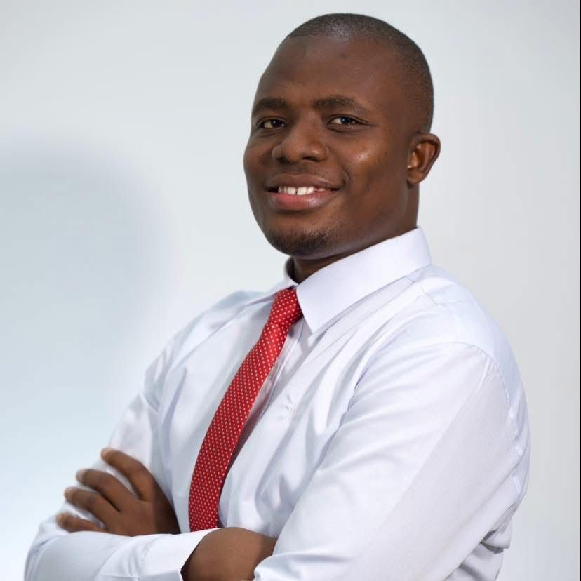

Duku Jallah Jallah lives in Monrovia, Liberia. In addition to his work in youth advocacy and public policy, he is involved in journalism, civic education, and media initiatives aimed at promoting public dialogue and leadership development among young Liberians. Politically, Jallah has described himself as a social conservative while also expressing support for social justice movements and left-leaning struggles related to economic inequality, education access, and youth empowerment. His public commentary frequently focuses on the need to expand opportunities for young people in governance and national development. He has often spoken about the limited political and economic space available to young people in Liberia and has advocated for policies and initiatives aimed at increasing youth representation in decision-making institutions. Outside of his civic work, Jallah has expressed a strong interest in Liberian history, public debate, and political education.
Duku Jallah

| Occupation | Liberia Youth President |
| Role | Public Servant |
| Nationality |  Liberia Liberia |
| Known for | Community Leadership |
| jaustinjallah24@gmail.com | |
| Official Facebook |
▾Early life
Duku Jallah was born and raised in the Red Light community, one of the largest informal settlements in Monrovia, Liberia. He attended the Booker Washington Institute, where he studied electronics. Following his graduation, Jallah began repairing mobile phones in the Red Light area due to limited employment opportunities. The income from this work helped fund his admission to the University of Liberia, where he studied economics. During his time at the university, Jallah became active in student leadership and civic engagement. He was a member of the university’s debate team and participated in student-led advocacy efforts focused on improving the quality of higher education and strengthening student representation. He later completed graduate studies at the University of Liberia Graduate School, graduating in 2023.
▾Career
Jallah’s early public leadership began when he was appointed Acting Youth Chair of the 72nd Community in Paynesville, where he organized youth activities and community initiatives. He later attended the Young Political Leadership School Africa, a program aimed at training emerging political leaders in Africa. During the program, he was elected to its leadership and traveled across Liberia advocating for peaceful democratic participation and youth involvement in elections. In 2018, Jallah was an aspirant in the leadership election of the Liberia National Students Union, a national body representing student organizations. In 2019, he was elected Deputy Secretary for Programs of the Federation of Liberian Youth. He later became Head of Secretariat of the organization in 2022 before being elected President in 2025. Alongside his youth leadership activities, Jallah founded Libpedia, a digital media platform that publishes stories about Liberian history, culture, and youth experiences.
▾Youth activism
Jallah has been involved in several youth advocacy initiatives in Liberia focusing on education reform, democratic participation, and governance accountability. He led the 20% Now or Never Campaign, which called for increased national investment in the education sector and advocated for the allocation of at least 20 percent of the national budget to education. He also worked with Naymote Partners for Democratic Development on the President Meter Project, a civic initiative that tracks the performance of elected officials against campaign promises. During election periods, he participated in the Liberia Decides initiative, which aimed to increase youth engagement in democratic processes. In 2020, he founded Libpedia, which produces digital journalism and storytelling content highlighting overlooked communities and social issues in Liberia. Through the initiative, he launched the Liberian History Project, a digital storytelling effort aimed at making Liberian history more accessible to young audiences. In 2022, he was appointed to the Liberia Bicentennial National Committee, which organized commemorative activities marking the country’s bicentennial. Jallah was also involved in the March for Justice, a protest movement calling for stronger government action against sexual and gender-based violence in Liberia. During demonstrations in 2020, he was arrested while participating in protests organized by youth activists. The movement increased national attention to the issue and was followed by the government declaring rape a national emergency. In 2023, Jallah hosted the radio program Our Voices Matter, which brought presidential candidates and policymakers to discuss issues affecting young people ahead of national elections. That same year, he helped convene youth leaders from different political parties to sign the Buutuo Declaration in Nimba County, a commitment to peaceful democratic participation referencing the town historically associated with the start of the Liberian civil war. In 2024, he launched the Future Leaders Town Hall, a civic dialogue initiative that brings public officials together with young people to discuss policy and governance issues affecting youth.
▾Leadership roles
Jallah has held several leadership positions within youth organizations and governance initiatives in Liberia. He served as Deputy Secretary for Programs of the Federation of Liberian Youth beginning in 2019 and later became Head of Secretariat in 2022. In 2025, he was elected President of the organization. He also helped establish the Youth Legislative Caucus of Liberia, an initiative within the National Legislature of Liberia that seeks to coordinate young lawmakers and advocate for policies addressing youth development.
▾Contact